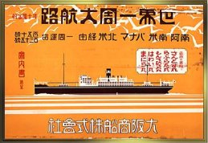

Family History |
|  |
And the Boats that Carried UsOur family crossed from Kobe to Rio in 41 days on the OSK Line's Montevideo Maru (or Montevideo Maru), The Montevideo Maru was sunk by mistake on July 1, 1942 off the coast of Luzon, Philippines, by the USS Sturgeon. The trip from Rio to New York took less than two weeks on the SS Argentina, which is described on the Immigrant Ship Information website. |